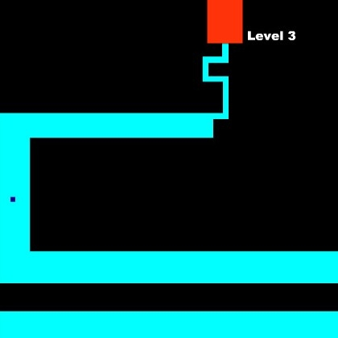

ПЕРВЫЙ БЛОК
Я просто какая-то информация. Так, без какого либо смыслаВТОРОЙ БЛОК
Я просто какая-то информация. Так, без какого либо смыслаТРЕТИЙ БЛОК
Я просто какая-то информация. Так, без какого либо смыслаЭто жалкое подобие бургера. Ну и пусть, я же развиваюсь и с каждым днем я знаю больше, чем знал вчера! И рано или поздно я сделаю это меню намного лучше!
Я тут отключил возможность скролла и вам придеться нажимать на такие кнопки, чтобы двигаться по странице
Хотя тут скролл есть. В каждой секции есть скролл. Ну, а вдруг у вас экран меньше, чем контент?
Следующий слайдПЕРВЫЙ БЛОК
Я просто какая-то информация. Так, без какого либо смыслаВТОРОЙ БЛОК
Я просто какая-то информация. Так, без какого либо смыслаТРЕТИЙ БЛОК
Я просто какая-то информация. Так, без какого либо смыслаhover достаточно интересное свойство. И поэтому оно чаще всего используется при создании сайтов. Оно добавляет частичку души.
С помощью этого свойства можно столько всего придумать. Нужна лишь фантазия (как у Анастасии)
Сделать ссылку, которая исчезает при наведении? Пожалуйста.
Но эта ссылка просто исчезает с помощью opacity: 0;, а это значит, что она кликабельна. А давайте попробуем сделать ей visibility: hidden;
Работает как-то плохо. А что, если...
А так работает нормально! Как? Делаем эффект наведения для родителя ссылки, а самой ссылке уже visibility: hidden;
А может мы увеличим размеры блока при наведении?
Привет!
О, а если сделать игру, похожую на ту сумую?..
Веди по линии мышкой.
Как-то прыгает страница. Думаю приступ эпилепсии не случится!
::after и ::before очень мощный инструмент. Но сейчас мы используем не всю мощь этого "элексира".